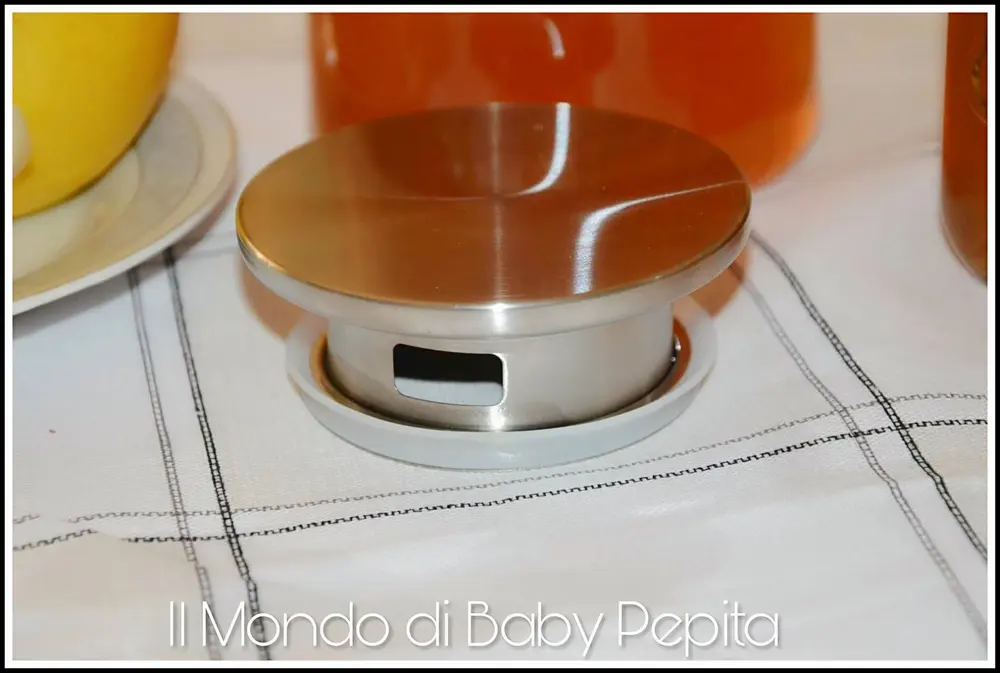
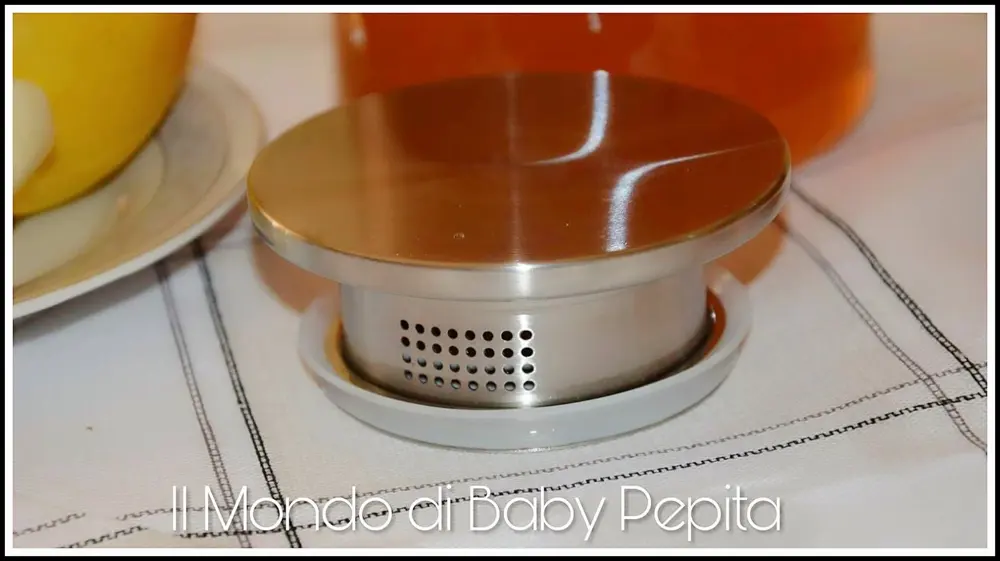
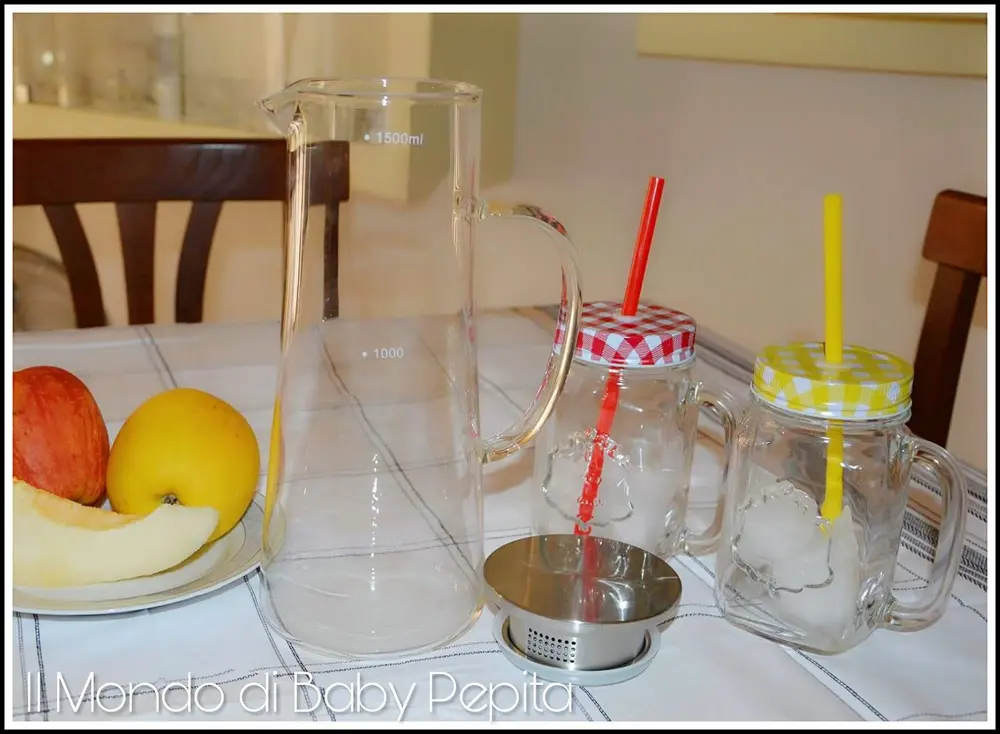
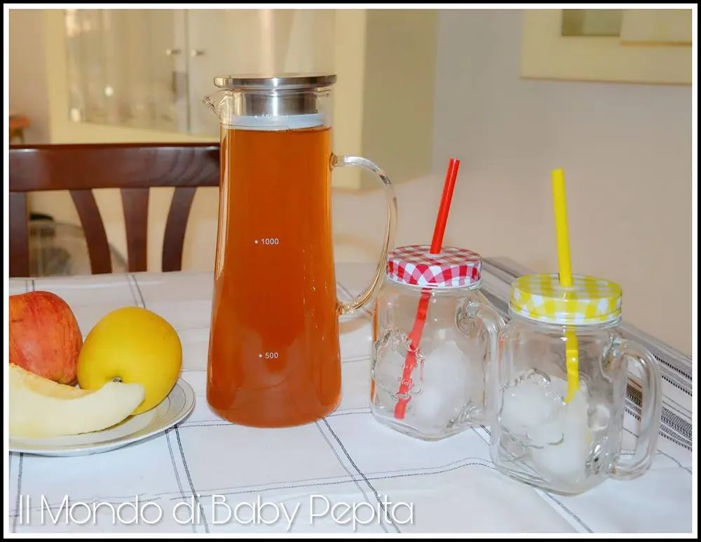
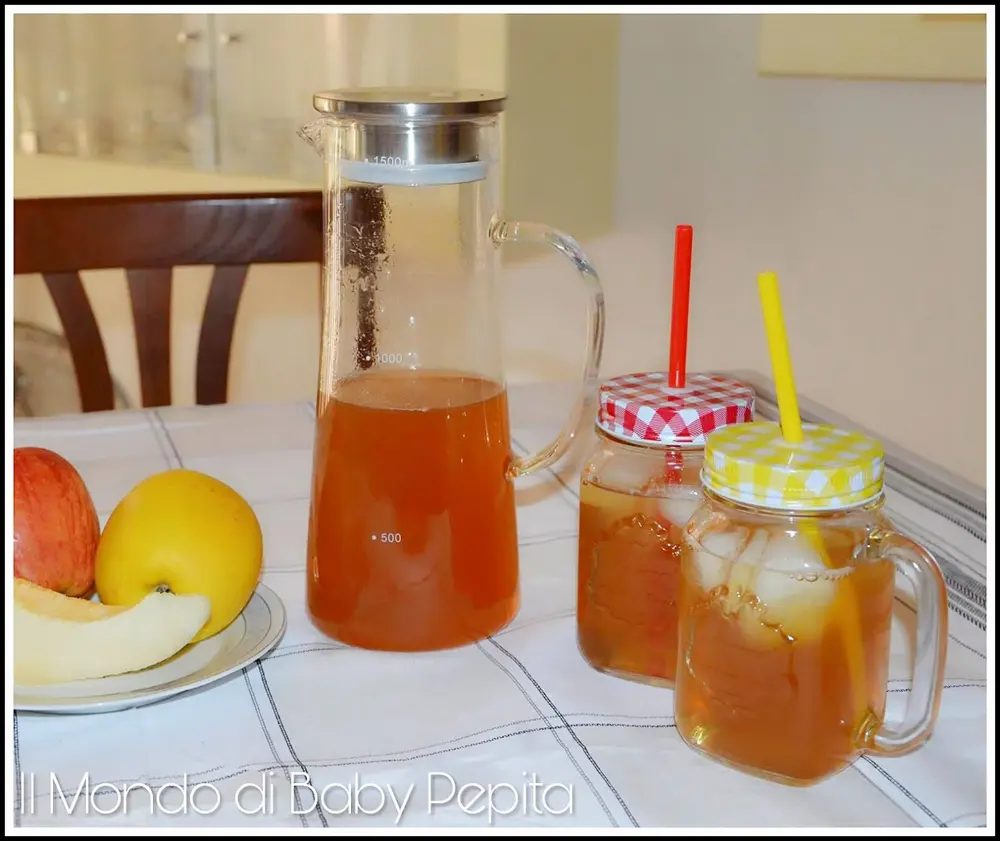

Caraffa refrigerante in vetro
Caraffa: Sono qui oggi a parlarvi di un prodotto diverso ma comodo per tutti. Un accessorio per la casa.
La caraffa refrigerante 1,5 litro in vetro.

Ok, appena è arrivata sono rimasta davvero contenta poiché sono sincera, non me l'aspettavo che potesse essere così ben fatta.
La trovo davvero bella, elegante ed anche comoda in quanto ha:
il tappo in metallo che è dotato di una guaina in modo da aderire perfettamente alla brocca sottostante e così davvero non traspira aria e refrigera per bene.

Ha inoltre dei fori su entrambi i lati, da un lato ha un foro a forma rettangolare, dall'altra parte ha 32 piccoli buchetti che servono a far passare i liquidi all'interno della caraffa.

La caraffa è interamente trasparente con un manico a mezzo cerchio, io direi anche bella da vedere su una tavola o su un banchetto.

È esattamente come in foto.
Su un lato della caraffa troviamo stampato in bianco gli ml per indicare la quantità che è all'interno.

Infatti ad una certa altezza c'è il numero
• 500; poi troviamo a metà caraffa • 1000; più in su, all'altezza del tappo c'è il numero • 1500 ml.
Comodo per chi vuol sapere per bene quanto beve.

Dall'altro lato invece è ovviamente del tutto trasparente senza nemmeno una scritta, il ché ripeto, rende questa caraffa elegante ed adatta ad ogni tipo di evento, che sia una colazione in casa, un aperitivo con amici, un buffet, una cena.
Forse l'unica piccola pecca è che sembra essere un pò fragile e di conseguenza ho paura di poterla rompere in fretta, ma sono sicura che è solo un'impressione in quanto vedo il vetro sottile. Ma finora non mi ha dato problemi.
Io l'ho provata e la sto utilizzando per il tè e mi è comoda per tenerlo ben fresco e soprattutto perché so quanto bevo.
Io consiglio di acquistare questa caraffa perché il prezzo vale il prodotto.
Prezzo: 26,99 €
Per acquistarla CLICCA QUI